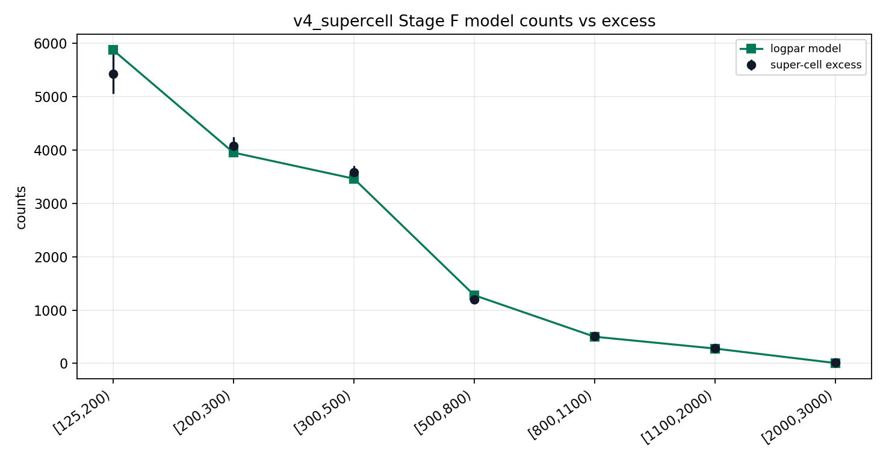
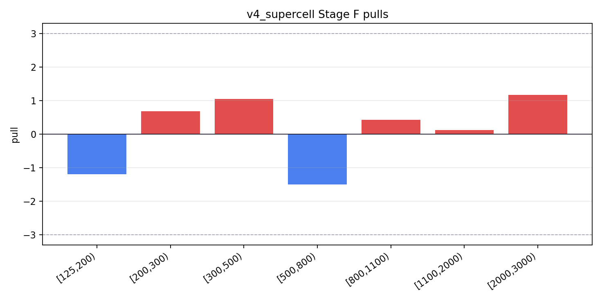
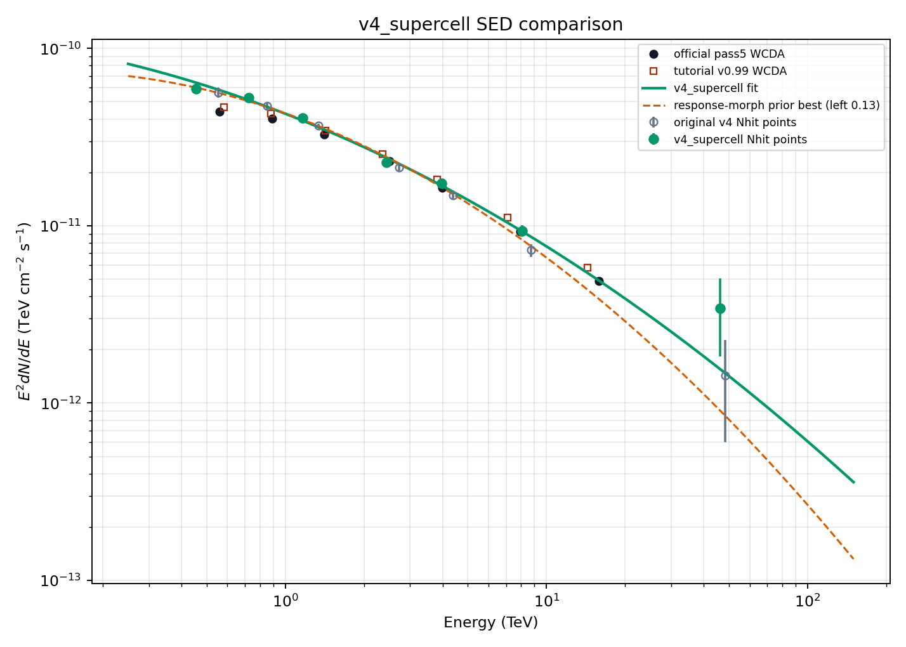
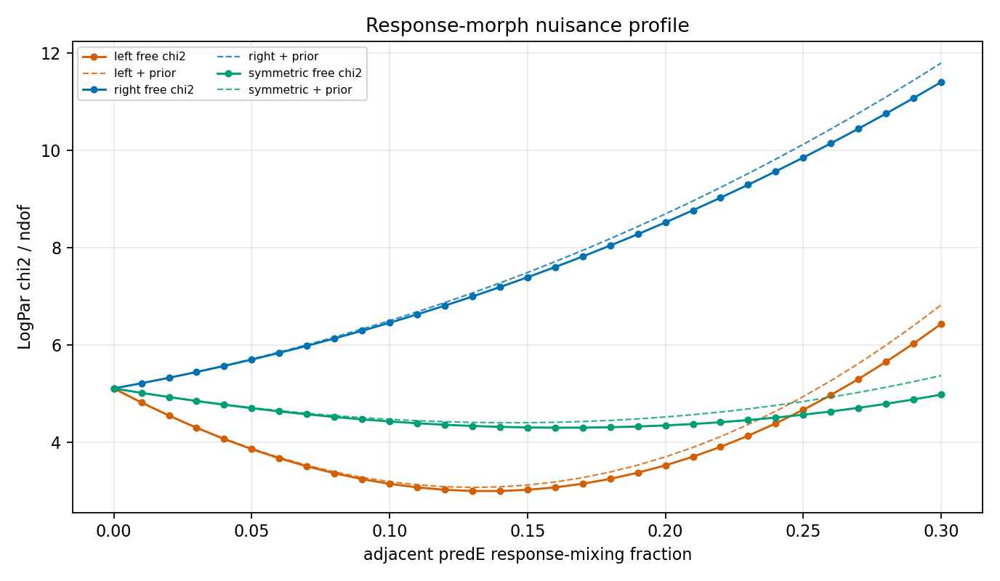
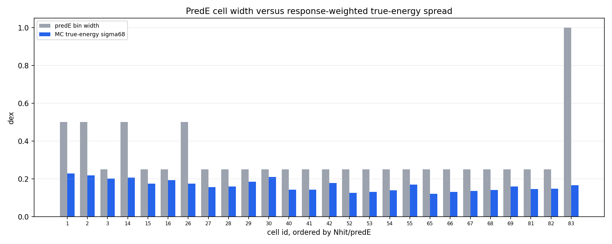
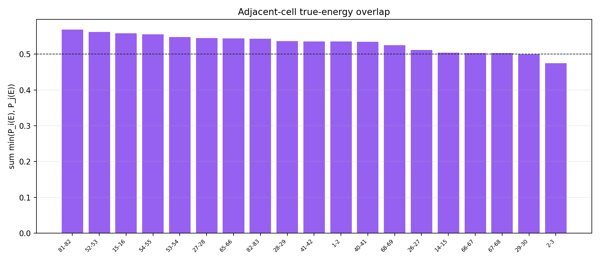

Repair Summary
This report is a new v4_supercell branch. It keeps the current annnorm Stage D/E background and the aperture-conditioned Stage A response, and does not overwrite the original v4 report.
LogPar chi2/ndof 5.1
LogPar chi2/ndof 1.698; 7 Nhit super-cells
prior-profile chi2/ndof 3.065
cells with predE width below MC sigma68
1. Super-Cell Stage F/G
Adjacent predE cells in the same Nhit row are summed before the forward-folding fit. Model response is summed with the Stage E containment already fixed to one.
| Nhit | cells | predE span | excess | err | LogPar model | pull | E50 TeV | sigma68 dex |
|---|---|---|---|---|---|---|---|---|
| [125,200) | 1;2;3 | [2,2.5)..[3,3.25) | 5431.3 | 369.66 | 5874.6 | -1.199 | 0.4544 | 0.2745 |
| [200,300) | 14;15;16 | [2.5,3)..[3.25,3.5) | 4073.9 | 178.03 | 3952.8 | 0.6803 | 0.7236 | 0.2421 |
| [300,500) | 26;27;28;29;30 | [2.5,3)..[3.75,4.0) | 3585.2 | 116.56 | 3463.5 | 1.044 | 1.166 | 0.2395 |
| [500,800) | 40;41;42 | [3.25,3.5)..[3.75,4.0) | 1201.1 | 51.99 | 1278.8 | -1.494 | 2.433 | 0.1843 |
| [800,1100) | 52;53;54;55 | [3.25,3.5)..[4.0,4.25) | 513.52 | 30.141 | 500.64 | 0.4272 | 3.958 | 0.1826 |
| [1100,2000) | 65;66;67;68;69 | [3.5,3.75)..[4.5,4.75) | 281.44 | 21.32 | 278.85 | 0.1214 | 8.087 | 0.2107 |
| [2000,3000) | 81;82;83 | [4.5,4.75)..[5,6) | 16.454 | 7.7166 | 7.424 | 1.17 | 46.33 | 0.1831 |

The fit is done on seven coarse Nhit-row super-cells.

Residuals after replacing fine predE cells with Nhit-row super-cells.

Super-cell SED points, original v4 Nhit points, official pass5, v0.99, and fitted curves.
Stage G-style super-cell points
| Nhit | cells | Eeff TeV | E2 dN/dE | err | N0 ratio | pull |
|---|---|---|---|---|---|---|
| [125,200) | 1;2;3 | 0.4544 | 5.93321e-11 | 4.0382e-12 | 0.9245 | -1.199 |
| [200,300) | 14;15;16 | 0.7236 | 5.27151e-11 | 2.3037e-12 | 1.031 | 0.6803 |
| [300,500) | 26;27;28;29;30 | 1.166 | 4.05338e-11 | 1.3178e-12 | 1.035 | 1.044 |
| [500,800) | 40;41;42 | 2.433 | 2.27700e-11 | 9.8564e-13 | 0.9392 | -1.494 |
| [800,1100) | 52;53;54;55 | 3.958 | 1.73026e-11 | 1.0156e-12 | 1.026 | 0.4272 |
| [1100,2000) | 65;66;67;68;69 | 8.087 | 9.36371e-12 | 7.0935e-13 | 1.009 | 0.1214 |
| [2000,3000) | 81;82;83 | 46.33 | 3.43824e-12 | 1.6125e-12 | 2.216 | 1.17 |
2. Response-Morph Nuisance
The original 26-cell fit is profiled over adjacent predE response mixing. A Gaussian prior with sigma=0.10 is included as a systematic-nuisance diagnostic.

Solid curves are free chi2; dashed curves include the Gaussian prior penalty.
| mode | fraction | chi2 | chi2/ndof | prior | profile chi2 | profile/ndof | alpha | beta |
|---|---|---|---|---|---|---|---|---|
| left | 0.13 | 68.81 | 2.992 | 1.69 | 70.5 | 3.065 | 2.8 | 0.1261 |
| left | 0.14 | 68.803 | 2.991 | 1.96 | 70.763 | 3.077 | 2.803 | 0.125 |
| left | 0.12 | 69.383 | 3.017 | 1.44 | 70.823 | 3.079 | 2.798 | 0.1273 |
| left | 0.15 | 69.368 | 3.016 | 2.25 | 71.618 | 3.114 | 2.805 | 0.124 |
| left | 0.11 | 70.517 | 3.066 | 1.21 | 71.727 | 3.119 | 2.795 | 0.1286 |
| left | 0.16 | 70.511 | 3.066 | 2.56 | 73.071 | 3.177 | 2.808 | 0.123 |
| left | 0.1 | 72.202 | 3.139 | 1 | 73.202 | 3.183 | 2.792 | 0.1296 |
| left | 0.17 | 72.236 | 3.141 | 2.89 | 75.126 | 3.266 | 2.81 | 0.122 |
3. MC Energy-Resolution / Binning Check
True-energy support is computed from the aperture-conditioned response weighted by the v4_supercell preferred spectrum and the Crab theta exposure.

Cells where the blue bar exceeds the gray bar are too fine for the current response resolution.

Large overlap means adjacent predE cells cannot be treated as independent spectral bins without a migration nuisance.
Most problematic width / resolution rows
| cell | Nhit | predE | width | sigma68 | width/sigma | too fine |
|---|---|---|---|---|---|---|
| 30 | [300,500) | [3.75,4.0) | 0.25 | 0.2101 | 1.19 | False |
| 3 | [125,200) | [3,3.25) | 0.25 | 0.2011 | 1.243 | False |
| 16 | [200,300) | [3.25,3.5) | 0.25 | 0.192 | 1.302 | False |
| 29 | [300,500) | [3.5,3.75) | 0.25 | 0.1838 | 1.36 | False |
| 42 | [500,800) | [3.75,4.0) | 0.25 | 0.1782 | 1.403 | False |
| 15 | [200,300) | [3,3.25) | 0.25 | 0.1734 | 1.442 | False |
| 55 | [800,1100) | [4.0,4.25) | 0.25 | 0.17 | 1.471 | False |
| 69 | [1100,2000) | [4.5,4.75) | 0.25 | 0.1595 | 1.567 | False |
| 28 | [300,500) | [3.25,3.5) | 0.25 | 0.1583 | 1.579 | False |
| 27 | [300,500) | [3,3.25) | 0.25 | 0.1561 | 1.602 | False |
| 82 | [2000,3000) | [4.75,5.0) | 0.25 | 0.1474 | 1.696 | False |
| 81 | [2000,3000) | [4.5,4.75) | 0.25 | 0.1452 | 1.722 | False |
| 41 | [500,800) | [3.5,3.75) | 0.25 | 0.1429 | 1.75 | False |
| 40 | [500,800) | [3.25,3.5) | 0.25 | 0.1419 | 1.762 | False |
Highest adjacent overlaps
| Nhit | left cell | right cell | overlap | high |
|---|---|---|---|---|
| [2000,3000) | 81 [4.5,4.75) | 82 [4.75,5.0) | 0.5682 | True |
| [800,1100) | 52 [3.25,3.5) | 53 [3.5,3.75) | 0.5615 | True |
| [200,300) | 15 [3,3.25) | 16 [3.25,3.5) | 0.5579 | True |
| [800,1100) | 54 [3.75,4.0) | 55 [4.0,4.25) | 0.5555 | True |
| [800,1100) | 53 [3.5,3.75) | 54 [3.75,4.0) | 0.548 | True |
| [300,500) | 27 [3,3.25) | 28 [3.25,3.5) | 0.5445 | True |
| [1100,2000) | 65 [3.5,3.75) | 66 [3.75,4.0) | 0.5439 | True |
| [2000,3000) | 82 [4.75,5.0) | 83 [5,6) | 0.5431 | True |
| [300,500) | 28 [3.25,3.5) | 29 [3.5,3.75) | 0.5362 | True |
| [500,800) | 41 [3.5,3.75) | 42 [3.75,4.0) | 0.5357 | True |
| [125,200) | 1 [2,2.5) | 2 [2.5,3) | 0.5354 | True |
| [500,800) | 40 [3.25,3.5) | 41 [3.5,3.75) | 0.5344 | True |
4. Recommended Use
For the current short-data analysis, use v4_supercell as the robust diagnostic SED branch and keep the original fine-cell v4 result as a residual-localization diagnostic. The next full analysis should rebuild v5 binning around the observed true-energy overlap, or profile response migration as a real nuisance, before treating adjacent predE cells as independent final fit bins.
Machine-readable outputs: apply/output/stage_f_v4_supercell/runs/v4_supercell_stage_f, apply/output/stage_g_v4_supercell/runs/v4_supercell_stage_g, apply/report/assets/v4-supercell.